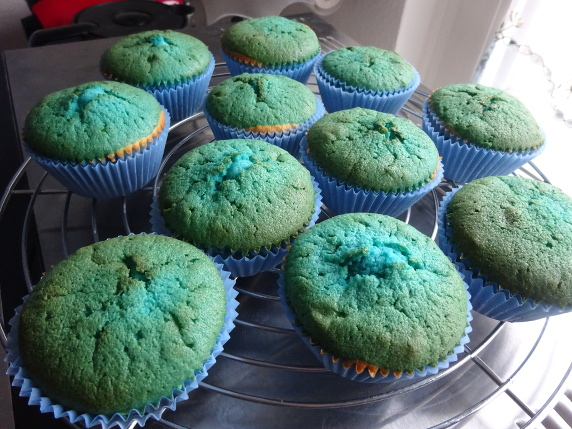

Muffins mit Schokosplittern

- Vorbereitung: ca. 15 Minuten
- Backzeit: ca. 25 Minuten
- Für 12 Stück
Zutaten
- 100 g Schokostreusel
- 200 g Mehl
- 150 g Zucker
- 1 Pck. Vanillepuddingpulver
- 1/2 Pck. Backpulver
- 1 Pck. Vanillezucker
- 200 g Margarine
- 3 Eier
- 100 ml Milch
Zubereitung
- Das Mehl mit Puddingpulver und Backpulver mischen und in eine Schüssel geben. Zucker, Margarine, Eier, Vanillezucker und Milch dazurühren. Zuletzt die Schokostreusel dazugeben.
- Den Teig in Muffinförmchen füllen und bei 160° Celsius (Umluft) ca. 25 Minuten backen.
Quelle: https://www.chefkoch.de/rezepte/866211192089377/Muffins-mit-Schokosplittern.html